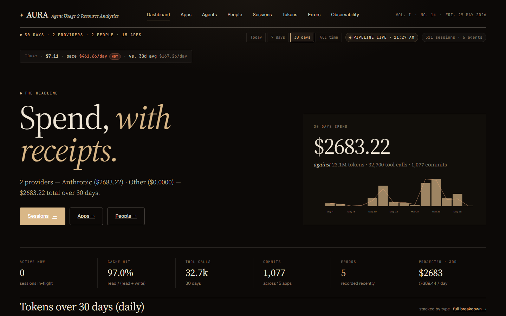
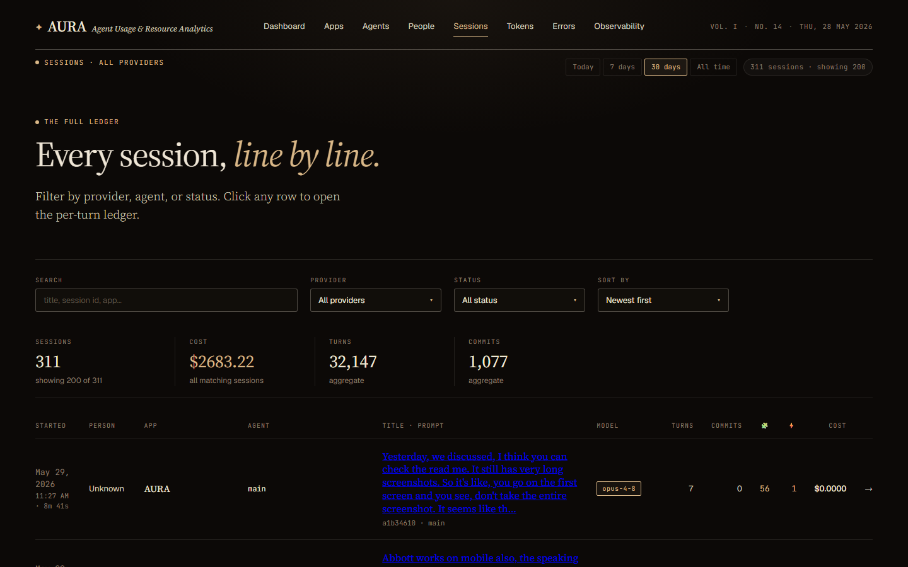
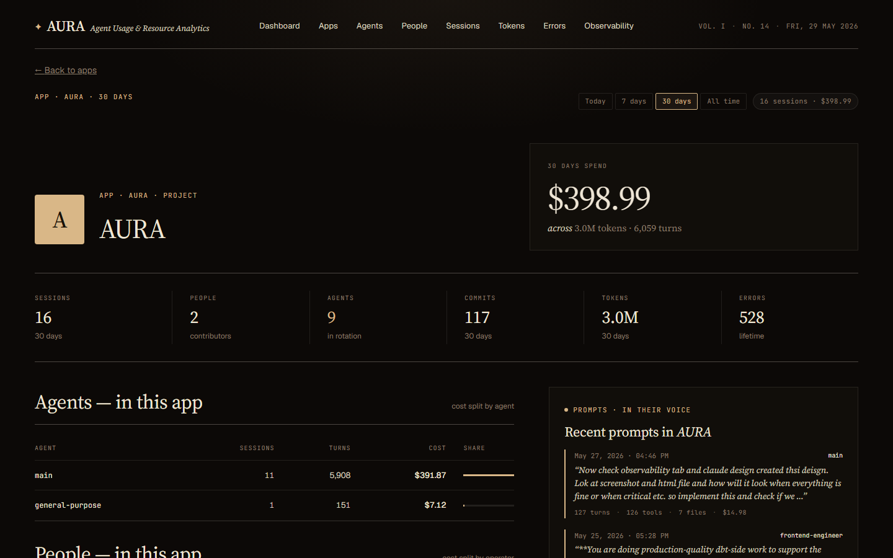
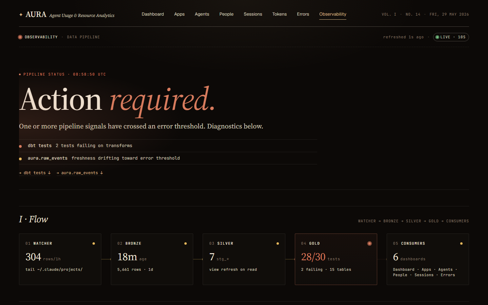

Crosshire Journal · Tooling / AI / Observability
Aura: Spend, with receipts.
I ran one query against a month of my own Claude Code transcripts and learned I'd spent $2,666 in thirty days — 32,600 tool calls, 1,072 commits, a 97% cache-hit rate, and a single agent quietly eating two-thirds of the bill. None of that was visible the day before. It was sitting in JSONL files on my disk the whole time, unread.
That gap — between how much your AI coding agent is doing and what you can actually see of it — is the entire reason Aura exists.
This post explains what Aura is, why I built it, how it works under the hood, and why I think anyone running an agentic coding assistant should be running something like it.
The problem: your agents keep a diary, and nobody reads it
If you use Claude Code, Cursor, Aider, or any agentic assistant, every
session you run is written to disk as a structured log. For Claude Code it's
~/.claude/projects/**/*.jsonl — one line per event: every prompt,
every model call with its exact token counts, every tool invocation, every
file edit, every error.
It is, genuinely, a goldmine. It records how you think, what you delegate, where your agents fail, and precisely what each of those things costs. And almost nobody looks at it, because:
- It's unreadable. Tens of thousands of nested JSON events per day.
- There's no total. Your provider bill is one number a month later, with no breakdown by project, by agent, by prompt.
- There's no memory. Once a session scrolls off your terminal, the reasoning and the receipts are gone unless you go spelunking in the raw files.
You're flying an increasingly expensive aircraft with the instrument panel taped over. Aura un-tapes it.
What Aura is
Aura is a local-first analytics platform for AI-coding-agent sessions. It watches your transcripts, transforms them with dbt, and surfaces cost, productivity, behavioural, and pipeline-health signals through a Next.js dashboard. Everything runs in Docker on your own machine. No data leaves your laptop.
The tagline is "Spend, with receipts," and that's the design constraint, not just a slogan: every dollar Aura shows you is traceable back to the prompt, the model call, and the file edit that produced it — and every page that shows a cost for a given time range reconciles to the same total. No drift between the dashboard and the per-app breakdown and the per-person breakdown. One number, provable from four directions.

Today it speaks fluent Claude Code. Gemini and Codex adapters are next — the architecture was built for more than one provider from day one.
Why I built it (and why a bill isn't enough)
The monthly invoice tells you that you spent money. It never tells you the things you actually need to act on:
- Which project burned the budget? Aura splits every dollar by app, project, agent, person, and individual prompt.
- Did you use a sledgehammer on a thumbtack? Aura's overkill detection scores each prompt on complexity (characters, tool calls, files touched) and compares it to the model tier you used. Fixed a typo with Opus? It gets flagged.
- Who's doing the work? When your main agent dispatches a
subagent via the
Tasktool, Aura attributes every event in that window to the real subagent — sotechnical-writer,frontend-engineer, andcode-reviewershow up as distinct rows instead of collapsing into one anonymousclaude. - Are the numbers even current? A built-in Observability tab shows ingestion freshness, dbt run status, and watcher failures, so you always know whether what you're looking at is live or stale.
I wanted the honest picture — for myself as an individual, and for any team that wants a shared, un-spun view of what their agents actually return for the money.
How it works
Aura is deliberately boring on the inside. No Kafka, no managed warehouse, no orchestrator. Three small, independent surfaces and a single file database.
~/.claude/projects/*.jsonl
│
▼
watcher (Python) ──writes──▶ aura.duckdb (the write DB)
tail + parse + redact │
│ │ snapshot every 30s (atomic)
│ dbt every 5 min ▼
▼ read/aura.duckdb (the read snapshot)
dbt models (DuckDB) │
staging → intermediate → marts ▼
Next.js 14 dashboard · localhost:30001. The watcher (bronze). A Python process tails the JSONL
files using polling (not inotify — it has to work on Windows and Docker
bind-mounts where filesystem events silently vanish). It parses each line,
redacts secrets and base64 blobs, and writes one row to a raw_events
table with an INSERT … ON CONFLICT DO NOTHING so re-runs never
double-count. On startup it backfills every existing file
newest-first, so today's data lands on the dashboard before
the historical catch-up finishes.
2. dbt (silver → gold). Every five minutes — against
whatever's in raw_events right now, never blocking on
backfill — dbt rebuilds a clean medallion stack: staging views, intermediate
models, and the marts the dashboard reads (fact_model_calls,
fact_daily_spend, dim_sessions,
fact_prompts, and friends). Cost is anchored to the event
timestamp, never session-start, so a session that began yesterday and
ran into today gets its tokens counted on the correct day. Pricing is
SCD-aware: rates have valid_from/valid_to, so
historical sessions stay correctly priced even after a price change.
3. The snapshot trick. DuckDB allows one writer at a time. Aura sidesteps the lock the easy way — never have two readers fighting the writer. The watcher atomically copies the write DB to a read-only snapshot every 30 seconds; the frontend only ever queries the snapshot. The frontend's connection layer watches the file's inode and transparently reopens when the snapshot is replaced, so it never serves stale data after a refresh. The cost is up to 30 seconds of lag. The win is zero connection contention and a dashboard that never locks up the ingester.
4. The frontend (Next.js 14, App Router). Server
components read DuckDB directly — almost no API layer. Charts are hand-rolled
SVG (no charting library to fight). One time-range model
(today / 7d / 30d / all) flows through every page, and ranged
queries hit a single pre-aggregated int_entity_spend mart so the
totals reconcile everywhere by construction.
The whole thing is designed to run a 200k+ event analytics stack on one laptop without an orchestrator — and it does.
What you actually get
A quick tour of the surfaces. (All screenshots are the real dashboard against my own month of transcripts.)
- Dashboard — the headline spend, a KPI strip (cache hit rate, tool calls, commits, errors, 30-day projection), the daily spend chart, and ledgers for apps, projects, and agents.
- Sessions — a filterable ledger of every session: title, model, turns, cost, person, agent, plus 🧩 skills and ⚡ MCP counts. Click one and you land on the per-turn Details view — the full deep-dive, tab by tab.

- Apps / Agents / People — every entity gets a roster and a profile page. The app page shows the agents in rotation, the people who worked in it, sibling apps in the project, and a live prompt feed. The agent page shows who delegates to it and the files it touches. The people page shows real operator cards with their share of org spend — and "What {name} actually types."

- Tokens — spend broken out by token type, provider, model, and agent, with a distinct palette per type so cache reads don't blur into output.
- Errors — hard errors, warnings, and tool failures across every session, filterable by kind, tool, and severity.
- Observability — the pipeline's own health: a derived verdict, a Watcher → Bronze → Silver → Gold → Consumers flow strip, medallion-layer freshness, source-freshness checks, dbt test results, and the live watcher error feed. It polls every 10 seconds.

Why you should use it
If you're an individual: you get introspection on your own habits. You'll find out which projects you over-spend on, which prompts you route to a model that's three tiers too big, and where your agents quietly burn tokens retrying the same failing tool. The first time overkill detection flags a $4 typo fix, it pays for the setup.
If you're a team: you get a shared, honest picture of agent ROI. Cost by person and by project, attribution down to the real subagent, error rates per agent, and a pipeline-health tab so nobody argues about whether the numbers are fresh. Because every cost reconciles to a single source, the dashboard total and the per-person sum are the same number — there's nothing to litigate.
If you care about privacy: everything is local-first. Nothing is shipped anywhere. And the path to multi-user is designed around column masking from the start — prompt and response text gets hashed before it would ever leave a machine, so a central store can aggregate cost and token counts without ever seeing what anyone typed.
The honest part
Aura is a tool I built for myself first, so the edges are honest:
- It reads Claude Code today. Gemini and Codex are on the roadmap (the pricing seed already has Gemini rows; only the adapter is missing).
- Sessions launched as top-level CLI agents
(
claude --agent <name>) roll up undermain, because that identity lives in a system prompt, not a structured field. Delegated subagents (viaTask) are attributed correctly. - Every dbt model is a full rebuild (
table/view), not incremental. At one developer's scale — 100k–500k events — a rebuild every five minutes finishes in under a minute. Past ~1M rows you'll want incremental facts; the plan for that is written down, not yet shipped.
These are deliberate "simplest thing that works" choices, not oversights. The roadmap is in the repo.
Getting started
You need Docker, Docker Compose, and a ~/.claude/projects/
directory with at least one session.
git clone https://github.com/darshanmeel/AURA.git
cd AURA
docker-compose up --build
# then open http://localhost:3000On first boot the watcher starts its snapshot and dbt workers immediately, backfills your existing transcripts newest-first, and hands off to the live poller. The dashboard populates while the historical catch-up is still running.
One footnote from experience: the dashboard defaults to the today range. If your most recent sessions were yesterday, "today" will look empty — switch to
7dor30dand the receipts appear. Everything filters on the event date, so an empty "today" means exactly that, not a broken pipeline.
The point
Your agents are already writing everything down. Aura just reads it back to you — with the totals, the attribution, and the receipts that the raw logs never quite hand over on their own. Spend, with receipts.
The repo is open. Point it at your transcripts and see what a month of your own agent usage actually looks like. I suspect, like me, you'll be surprised by at least one number.
Aura is MIT-licensed and runs entirely on your machine. Architecture deep-dive: HOW-IT-WORKS.md. Operator's guide: OVERVIEW.md.